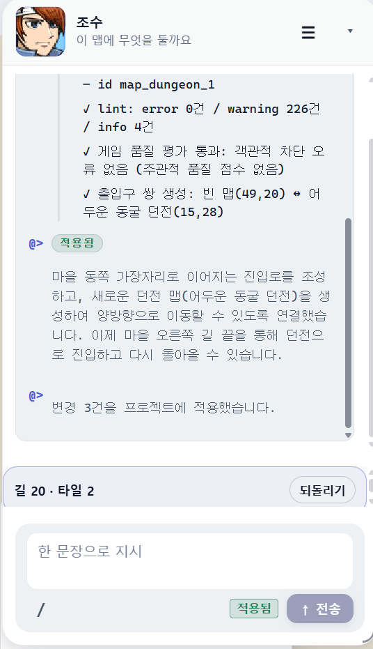
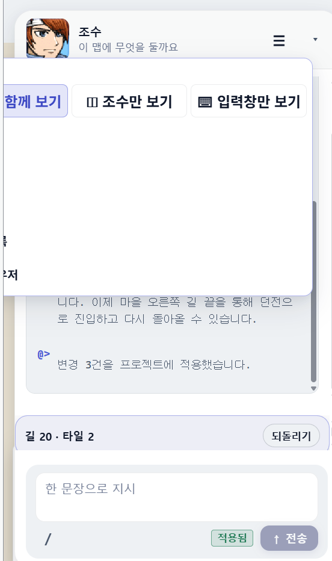

ASSISTANT SURFACE · AFTER
조수는 대화가 아니라 장면을 보여준다
지금 패널은 린트 로그·적용 뱃지·빈 드롭다운이 같은 360px 카드 안에서 서로 싸운다. After는 한 장의 맵 썸네일, 한 줄의 상태, 한 개의 되돌리기로 같은 작업을 읽히게 한다.
Before — 무엇이 엉망인가

로그·린트·내러티브·적용 줄·되돌리기 바가 한 스크롤에 겹친다. 「적용됨」이 말풍선과 전송줄에 중복된다.

대기 화면 메뉴가 카드 왼쪽을 뚫고, 본문은 텅 빈 흰 면으로 대화를 가린다. 「함께 보기」가 잘린다.
- 팝오버가 카드보다 크다. 모드 3개는 헤더 ⋯ 안에 높이 hug로 붙인다. 빈 흰 면은 금지.
- 시스템 로그가 채팅을 먹는다. lint 226건 덤프는 접힌 「작업 기록」. 본문은 맵 전/후와 한 문장.
- 상태 뱃지 중복. 적용됨은 마지막 결과 카드에만. 전송 버튼 옆에서는 뺀다.
- 되돌리기가 공중에 뜬다. 결과 카드 하단 한 줄(길 20 · 타일 2 · 되돌리기)로 고정.
- 이미지가 없다. 출입구·슬라임·물약은 문장이 아니라 썸네일. 조수는 이미지 리치 채팅.
After — 지도 위에 얹은 조수
실제 EasyRPG 페이스셋·칩셋·아이콘을 잘라 넣었다. 유리는 맵을 가리지 않는 왼쪽 카드, 메뉴는 카드 안쪽에 가둔다. 헤더 ☰ 을 눌러 대기 화면 메뉴를 확인한다.
구현 순서 (제품 코드에 옮길 때)
- 헤더 메뉴를 카드 내부 clamp (left overflow 0, 높이 = 항목 3개). 빈 본문 삭제.
- 어시스턴트 말풍선에 맵 전/후 썸네일 + 엔티티 칩을 기본 슬롯으로 둔다. 텍스트만 있는 완료 메시지는 실패로 본다.
- lint/id 덤프는 details 「작업 기록」. 기본 접힘.
- 컴포저에서 적용됨 뱃지를 제거하고, 결과 카드 하단 한 줄만 남긴다.
- 추천 3장은 텍스트 칩 대신 이미지 타일 (몬스터/아이템/입구).